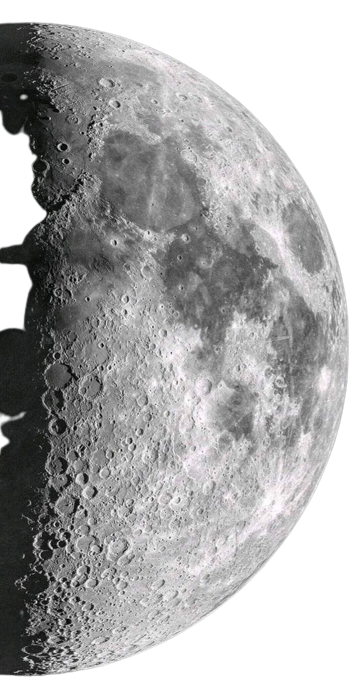

Moons
How Many Moons Are There in the Solar System?
The "traditional" moon count most people are familiar with stands at 290: One moon for Earth; two for Mars; 95 at Jupiter; 146 at Saturn; 27 at Uranus; 14 at Neptune; and five for dwarf planet Pluto. According to NASA/JPL's Solar System Dynamics team, astronomers have documented more than 460 natural satellites orbiting smaller objects, such as asteroids, other dwarf planets, or Kuiper Belt Objects (KBOs) beyond the orbit of Neptune.
Source: JPL Solar System Dynamics, Last Updated: May 23, 2023
| "Traditional" Moons (Earth, Mars, Jupiter, Saturn, Uranus, Neptune, & Pluto) | 290 |
| Small Body Moons (Asteroids, Kupier Belt & Trans-Neptunian Objects) | 462 |
| Total Reported Moon Count | 752 |
Moons come in many shapes, sizes, and types. A few have atmospheres and even hidden oceans beneath
their
surfaces. Most planetary moons probably formed from the discs of gas and dust circulating around
planets
in
the early solar system, though some are captured objects that formed elsewhere and fell into orbit
around
larger worlds.
Scientists are getting so good at spotting tiny moons orbiting distant, giant planets that the
International
Astronomical Union, which governs official names of planets and moons, will no longer name the
smallest
moons unless they’re of “significant” scientific interest. There are likely thousands more moons
awaiting
discovery in our solar system.